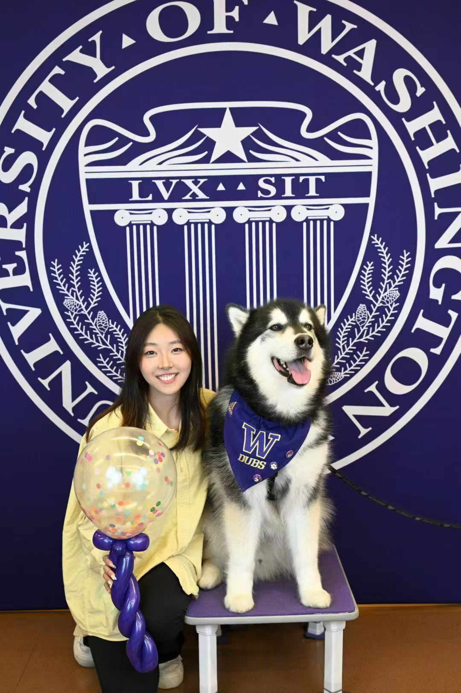
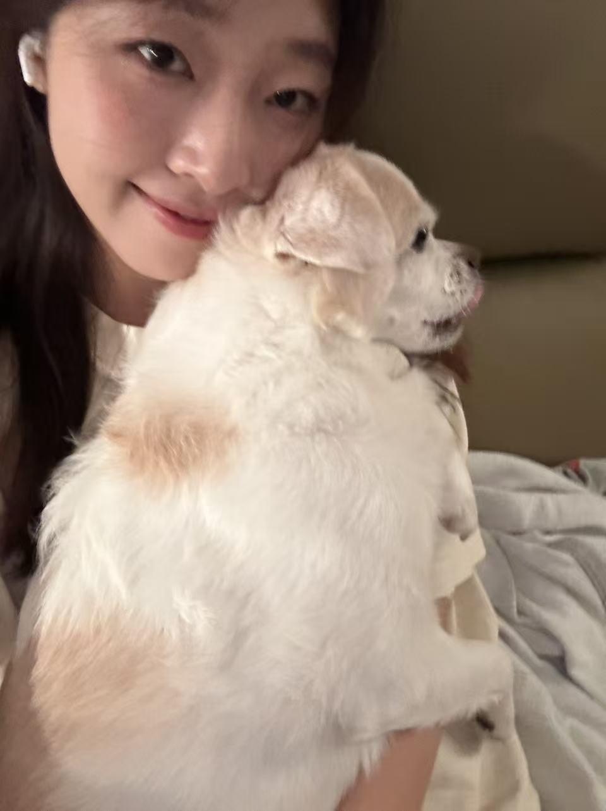

Designer & strategist focused on product design, product strategy, and human-centered experiences — bridging research, design, and execution to build meaningful, inclusive technology.
I'm a product designer and strategist who cares deeply about how technology shapes everyday human experiences — especially building systems that are thoughtful, inclusive, and accessible to people with different abilities and backgrounds.
My background spans UI/UX design, interaction design, product strategy, UX research, and agile planning. I’m especially strong at turning ambiguous ideas into clear user flows, polished interfaces, and rapid prototypes that help teams test, communicate, and iterate quickly. I thrive at the intersection of design and product management, translating research insights into meaningful, well-executed digital experiences.
I recently graduated from Cornell University with a Master of Professional Studies in Information Science, building on a B.S. in Informatics from the University of Washington. Outside of work, I love hiking, skiing, traveling, and discovering new cuisines — and I'm a proud dog person.


Designed a centralized dashboard discovery platform for healthcare teams. As part of a Cornell × AltaMed collaboration, I investigated how employees discover and access dashboards, then designed a SharePoint-based portal supporting browsing, search, and streamlined access requests.
Explore ProjectA 12-week capstone designing a virtual healthcare portal for elderly residents in rural Washington, with an AI-supported clinic interface and dual go-to-market strategy.
Explore ProjectAn online pet fostering platform connecting owners, venue providers, and carers using unused housing resources to offer professional pet care and logistics services.
Explore ProjectA wearable navigation device for visually impaired individuals using AI and tactile feedback to enhance safety and independent mobility. Led mapping module and dataset collection.
Explore ProjectAn interactive scrollytelling data story examining CO₂ emissions through four lenses — total, per capita, cumulative, and consumption-based — to reveal how the metric you choose reshapes the politics of climate responsibility. Built for Cornell's Data Communication course.
Explore ProjectAn iOS game designed and built as part of a game design course, now available on TestFlight. Inspired by Greek mythology and Olympic competition, blending strategy and storytelling.
Explore ProjectI'm currently open to product design, UX/UI design, and product strategy roles and internships. Whether you have a project in mind or just want to chat about design — I'd love to hear from you!